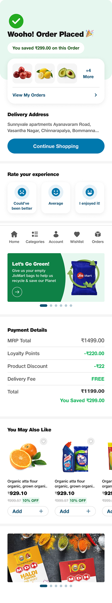
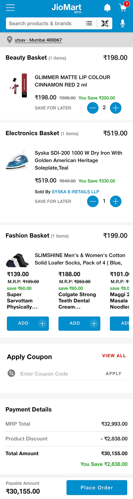
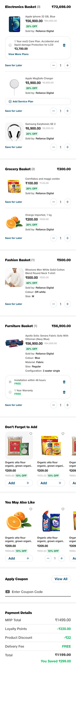
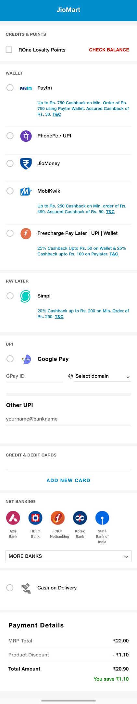
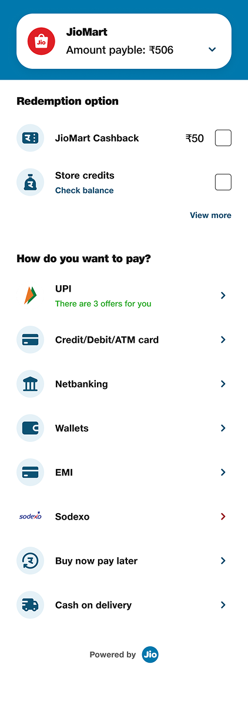
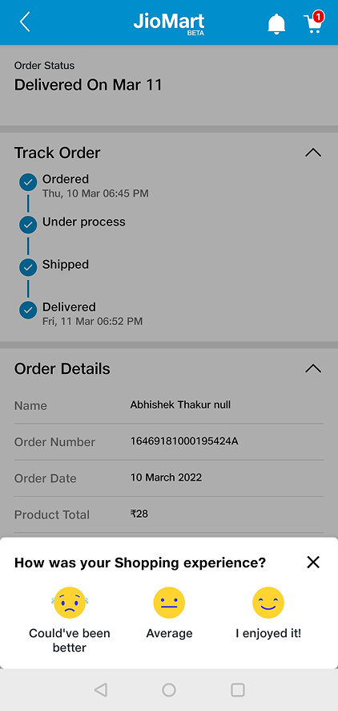
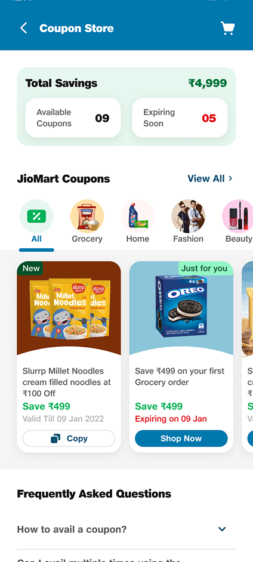

The checkout that was quietly leaking users.
How a cart-to-payment redesign lifted JioMart's conversion by 20.5%.

Every shopping trip ends at one screen.
Checkout is the exit door — where intent turns into a purchase, or an abandoned cart. JioMart's was never truly optimized.

Functional on the surface.
Friction underneath.
Checkout felt like a chore,
not a continuation of shopping.
So we rebuilt it around one idea: make it fast, clear, and rewarding — every step.
A cart that helps you decide.
One clear primary action. Everything else steps back. Best coupon applied automatically, savings colour-coded.

The amount, always in view.
Never make a user scroll to find what they owe. Cut the length, kept the payable amount pinned, surfaced every method upfront.


End on a reward. Loop back to browsing.
A clear savings callout, ordered items front and centre, and a primary "Continue shopping" CTA turn the last screen into the next trip.

Move savings to the start.
A dedicated coupon store lets shoppers browse and apply offers early — not fumble for them at the last step.

"Every frustration you remove is a leak in trust you seal. Fixing checkout isn't UX polish — it's business-critical."